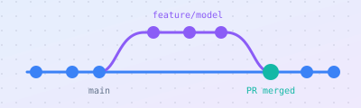

R1
gitgithubteamwork
GitHub for Your Semester Project
Git basics, branches and pull requests, data science repo layout, and how group contributions are assessed
Resources · Semester project
These sit outside the weekly topic sequence. They cover the tools you need to build, share and defend your semester project as a group.

Git basics, branches and pull requests, data science repo layout, and how group contributions are assessed